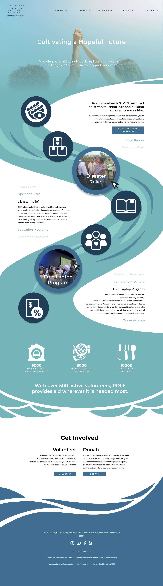

River of Life Foundation Website Redesign
For my Website Graphic Design course, we were tasked to redesign a non-profit organization's website.
I picked River of Life Foundation, pushing the motif of river and water to create a unique and and modern identity for ROLF.
This is ROLF's original website, which I am aiming to improve upon.


Research
River of Life Foundation is a charity organization focused on humanitarian aid. With seven different aid initiatives, ROLF is aimed towards a diverse range of people, from families struggling with food in Santa Clara to people impacted by natural disasters around the world.
I first explored ROLF's site in full to understand who they are, what they do, and what they want their website to do. The ROLF website is meant to be a one-stop site for both people who are in need and people who wish to help and provide. Thus, I created three goals for my redesign.
- As a charity organization's website, the redesign should be, above all, encouraging and hopeful to anyone who sees it. Those who are in need should be encouraged to reach out and ask for help. Those who aren't in need should be encouraged to reach out and provide help.
- As an organization based in Silicon Valley, the redesign should be modern, clean, and sleek, yet still unique and full of personality. The content of the website should be interesting yet still easy to navigate and accessible to all.
- As their vision states "a river of compassion," the redesign should have a river somewhere!
Ideate
After setting in stone for what the redesign should feel like, I now delved into what the redesign should look like. I aimed for four pages: Homepage, About Us, an Aid Initiative, and Volunteer. Each of these pages first started with several rough layout sketches before I moved to create two cleaner low-fidelity wireframes for each page.
At this stage, I also took the opportunity to play with the 'river' idea. How might it interact with page elements? How might it shift layouts? How might I use it to communicate information?
Eventually, I settled on the idea that this river would flow through each of the seven aid initiatives and then pool down at the bottom where the user would be able to see the impact of ROLF. A very clear message of how ROLF has helped the community so far.


Design

I decided to use Figma to bring the wireframes to a full design. I also chose to stick with ROLF's original color scheme and many of the fonts they used. Even in this phase, I found some design choices that didn't work when I fully fleshed them out. The homepage took many iterations and feedback from my professor and classmates before I finally settled on this design. Still, I enjoyed the process of working through these challenges with the help of my peers.
As a website design that did not require development and implementation, I could push my creativity into unique styles and layouts that would usually be limited by time if I needed to code it. The process also familiarized me with using Figma and creating vector graphics. As one of the first few website layouts that I journeyed through the entire design process to create, I learned much about the formal practice of designing websites, and I have only grown more excited to create more.